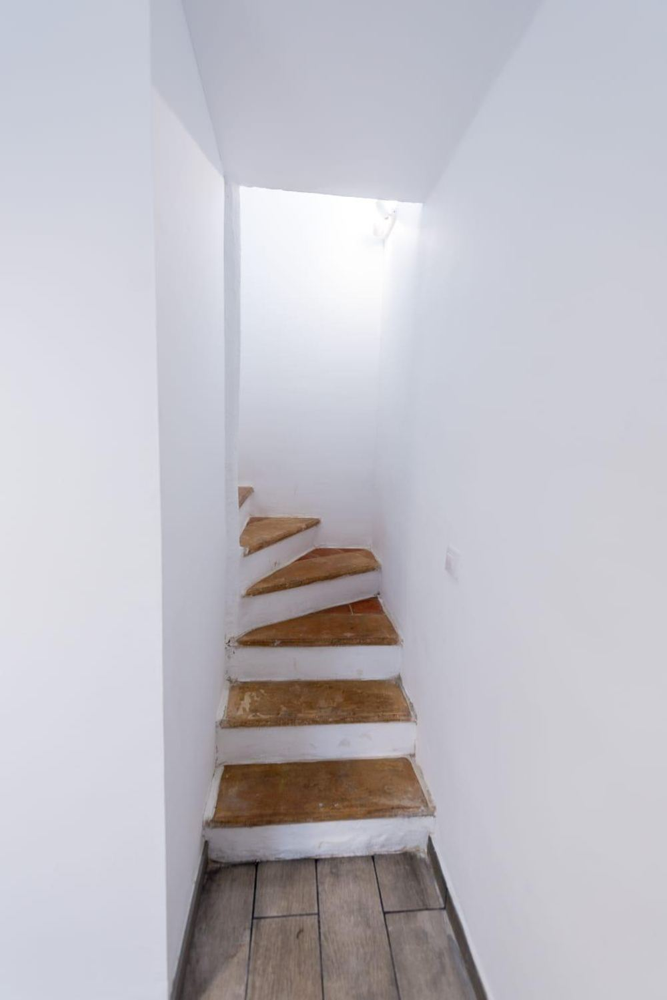
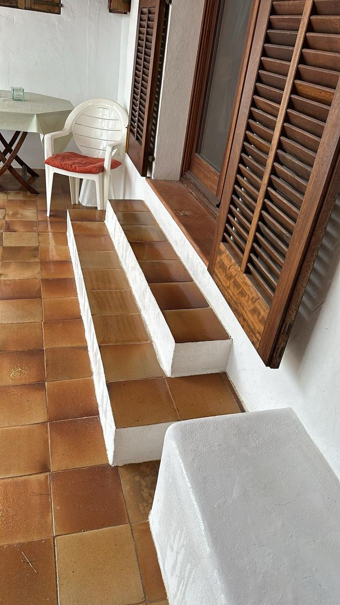

Servicio integral de facility management, activo desde 2008: nos encargamos de todo el proceso, desde el acceso al inmueble hasta dejarlo listo para su venta o alquiler, incluyendo la gestión de rotaciones entre inquilinos.
Dividimos el servicio de Facility en cuatro departamentos especializados, para que cada tarea la gestione quien mejor la conoce.

Ejecución de la reforma completa del inmueble: pintura, mobiliario, instalaciones, cocina y puertas.

Acceso al inmueble (con comisión judicial cuando es necesario), vaciado completo y coordinación de todos los oficios durante la adecuación.

Rescisión del contrato, checking del estado de entrega y puesta a punto de la vivienda para el nuevo inquilino.
Mantenimiento de parcelas y terrenos según las condiciones exigidas por los ayuntamientos, evitando riesgos de incendio o sanciones.
Trabajamos en el sector del facility management desde 2008, ofreciendo un servicio integral a las empresas propietarias de los inmuebles. Cuando es necesario, accedemos a la vivienda junto con la comisión judicial y realizamos el vaciado completo. A partir de ahí, elaboramos un presupuesto de adecuación según los parámetros pactados con la empresa y, una vez aprobado, ejecutamos todos los trabajos necesarios: pintura, sustitución de mobiliario, revisión de instalaciones y suministros, montaje de cocina nueva, montaje de puertas y cualquier otra intervención que la vivienda requiera. Si procede, asesoramos al cliente sobre posibles mejoras. Una vez finalizado, el inmueble queda listo para su venta o alquiler. También gestionamos rotaciones de alquiler: rescindimos el contrato, hacemos el checking del estado en el que se entrega la vivienda y, si es necesario, la reparamos y dejamos a punto para el nuevo inquilino. Además, nos encargamos de la limpieza de solares y el desbroce de parcelas y terrenos, manteniéndolos en las condiciones que exigen los ayuntamientos y evitando riesgos de incendio o sanciones.
Estas son fotos reales de adecuaciones integrales que hemos realizado en distintos inmuebles en Mallorca.
Instalación revisada y normalizada, con cada circuito identificado.

Cocina nueva completa: mobiliario, electrodomésticos y encimera.


Escalera reformada de arriba abajo, con nuevos peldaños y pintura.

Sustitución completa de puertas y acabados del armario.
Suelo, puertas e iluminación renovados por completo.


Limpieza, impermeabilización y puesta a punto de la azotea.


Sellado de la superficie y pintura impermeabilizante para evitar filtraciones.

Sustitución de tejas dañadas y sellado de juntas en una vivienda unifamiliar.
Colocación y rejuntado de azulejos como parte de una reforma integral de baño.
Renovación completa de las instalaciones de agua (alimentación y evacuación) y del circuito eléctrico, con creación de un subcuadro propio en la cocina exterior de la piscina.
Reforma integral de la cocina exterior de la piscina: nueva distribución, mobiliario a medida, encimera y electrodomésticos empotrados.
Aprovechamiento de un hueco de pared para crear una despensa con baldas a medida.
Una vez renovadas las instalaciones, se alicató el suelo con gres nuevo antes de montar la cocina.
Como parte de esta misma reforma, se redujo el hueco de la ventana y se cerró con obra, terminando el acabado con una rejilla decorativa de forja.

También se renovaron, dentro de la misma reforma, los escalones de acceso a la terraza.
Accedemos al inmueble (con la comisión judicial cuando es necesario) y realizamos el vaciado completo.
Evaluamos el estado del inmueble y elaboramos el presupuesto de adecuación según los parámetros pactados.
Pintura, mobiliario, instalaciones, cocina, puertas, suministros, limpieza de solares y desbroces: todo lo que el inmueble o la parcela necesite.
La vivienda queda lista para su venta o alquiler, con asesoramiento sobre mejoras si procede.
Servicio integral desde el descerraje hasta la puesta a punto final, con presupuesto y aprobación acordados en cada fase.
Mantenimiento, reformas y gestión de rotaciones de alquiler para mantener la vivienda siempre lista.
Cuéntanos tu caso y te decimos cómo podemos ayudarte.
o visita la página de contacto completa